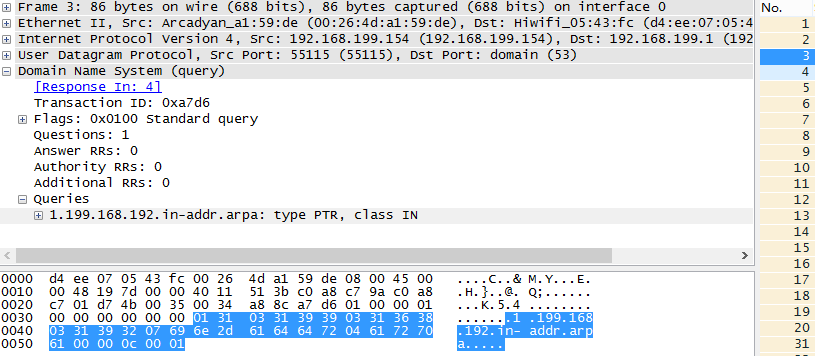

引言
网络十分普及的现在,几乎每家每户都用上了无线局域网, 但也时常因为路由器密码泄露或破解被别人蹭网,加之WiFi 万能钥匙等软件的流行, 越来越多人加入了蹭网大军, 也给不少小型局域网用户带来了烦恼. 目前许多安全软件厂商都在推出检查蹭网的小程序, 通过这样的程序可以十分便捷的看到哪些设备在使用局域网, 从而及时发现和采取应对措施, 为广大用户弥补了损失.
准备
笔者手里正好有一款由nisoft发布的检查蹭网的小程序, 叫做Wireless Network Watcher, 软件免费试用, 文末将给出下载地址. 本文将针对该款软件做分析. 其次是WireShark协议分析工具, 这个软件很常见, 感兴趣的话可以百度下载.
笔者的系统仍然是Windows8.1 Pro.
操作步骤
1.打开Wireless Network Watcher, 在Advanced Options中设置合适的Network adapter(可能含有其他网络设备的网段), 笔者主机所在网段是192.168.199.*
2.打开WireShark,选择合适的网卡然后启动监控
3.启动Wireless Network Watcher的扫描
4.等待扫描结束,然后停止两个软件
5.在WireShark中进行分析
分析
从Wireless Network Watcher的扫描结果来看,除了Router之外还发现了3个设备,一个是我的主机(Your Computer),一个是我的安卓手机,还有一个是HyFi智能无线路由器.
此外,包括MAC地址在内的IP地址, 设备名称Device Name等等都获取到了.
从Wireshark的抓包结果来看, 大多数是ARP协议, 在ARP应答报文中可以得到对应在线主机的MAC地址, 程序在收到应答后有一个DNS反向解析动作, 在DNS应答中又可以得到设备的Device Name,而这个Device Name应该是存在Router中的. 过滤其他干扰协议保留ARP和DNS. 可以十分明显的发现ARP请求报文的 Target IP address是从网段中0开始,一直到255, 也就是说软件扫描了整个网段, 发送了256个ARP广播用来查找在线的主机, 然后通过得到的IP地址向路由器发送DNS反向解析请求,用来获取设备的名称. 如图所示:
这里先借一段关于ARP协议的百科:
地址解析协议，即ARP（Address Resolution Protocol），是根据IP地址获取物理地址的一个TCP/IP协议。其功能是：主机将ARP请求广播到网络上的所有主机，并接收返回消息，确定目标IP地址的物理地址，同时将IP地址和硬件地址存入本机ARP缓存中，下次请求时直接查询ARP缓存。地址解析协议是建立在网络中各个主机互相信任的基础上的，网络上的主机可以自主发送ARP应答消息，其他主机收到应答报文时不会检测该报文的真实性就会将其记录在本地的ARP缓存中，这样攻击者就可以向目标主机发送伪ARP应答报文，使目标主机发送的信息无法到达相应的主机或到达错误的主机，构成一个ARP欺骗。ARP命令可用于查询本机ARP缓存中IP地址和MAC地址的对应关系、添加或删除静态对应关系等。
—- 百度百科
通过这段引用可以了解到ARP协议的Request是一个广播,发送到网络上所有主机,然后接收应答.
关于DNS的工作原理可以参考我的另一篇文: 《利用WireShark进行DNS协议分析》
现在让我们来分析一个ARP的请求和应答,以及一个DNS的请求和应答.
以第一个ARP为例:

第一个包是ARP请求,第二个是ARP应答,第三个是DNS请求,第四个是DNS应答,下面依次分析:
1. ARP请求
ARP请求的关键在于目标MAC尚未知道,因此全0,注意上层协议中的目标MAC是全f, 表示一个广播, 由于不同层的协议不同, 因此含义也不同. 请求解析的地址是192.168.199.1, opcode为 0x0001代表该ARP是一个Request.
ARP报文格式不在本文的讨论范围, 其本身也比较简单. 请读者自行百度.
2. ARP应答
当ARP请求广播后, 收到请求的主机检查Target IP address是否和自己相同,相同就回应一个ARP, 注意此时不再是一个广播了,而是定向的回应发送者. Sender MAC address字段里放有我们希望得到的目标MAC地址.
主机得到来自192.168.199.1的应答后, 取出MAC并记下IP地址, 为后面的DNS反向解析做准备.
其实到此为止, 就探测到了一个在线的主机, 完成了关键的侦测任务, 下面的DNS是软件本身为了优化用户体验, 向路由器查询一下设备名称而已. 此外,如果广播出去的ARP一定时间内没有收到回应,说明所探测的主机不在线.
3. DNS请求

主机收到ARP回应后, 利用IP地址进行DNS反向解析, 注意查询IP字段在报文中是逆序存放的. 目的地是路由器.
4. DNS应答
DNS应答报文中指出Domain Name是 Hiwifi.lan 这和软件上的Device Name一致.
实现
之前直接打算用boost的asio网络库来实现ARP的收发,搞了半天发现asio的rawsocket不能自定义实现这样的底层协议,网络上关于boost实现ARP的资料几乎没有,因此考虑了windows平台下的winpcap.
首先需要自己定义好arp以及ethernet报文(帧)的标准格式,为了简便起见,成员函数全部使用inline方式, 下面两个hpp分别定义了这两种格式:
1 | //ethernet_header.hpp |
1 | //arp_header.hpp |
关于主机字节序(本例为小端)和网络字节序(大端)的转换过程可以参考上面代码中的注释.
实在贴不下这么多代码了,主函数代码包括所有本文涉及的hpp源代码请见下面的代码分享链接.
由于时间仓促,代码仅供学习交流,有很多遗留的问题尚未解决,但并不影响大家对整个实现过程的理解
运行结果
程序将扫描定义好的整个ip区段,发送ARP广播,然后接收响应,列出目标的MAC地址.具体实现请看下面的代码分享.
代码分享
http://www.oschina.net/code/snippet_580940_37722